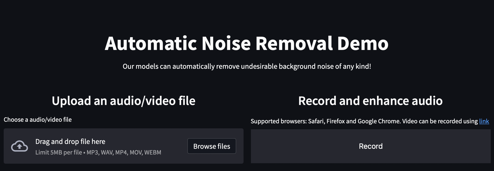

World’s first Real-time AV Speech Enhancement Demonstrator:
(Initial Use case: Real-time, Web-based Video Conferencing Applications)
Recording of Live Video Demo showcased at the 2022 IEEE Engineering in
Medicine and Biology (EMBC) Workshop:
2 speakers communicating in real-time on MS Teams, physically based in
two distant noisy Cafe locations within the EMBC Conference venue
(SECC, Glasgow, UK)
Multi-Modal Speech Enhancement for Human-Robot Interaction
Human-Robot Interaction helps in improving welfare of the society (e.g. human support robots in assistive care living for elderly). However, improving the ability to interact through voice with a robot is a challenging task in real environments. Thus, we aim to utilize the novel speech enhancement algorithms developed by our COG-MHEAR researchers to improve the intelligibility of the voice information in the robot.We have an assistive care living home at Heriot-Watt University. The home is fitted with multiple sensors, cameras and has state-of-art robots (e.g. Toyota human support robot, Pepper robot, etc.) for assistive care living for elderly people. In this demonstration, we show that the Toyota human support robot collect the audio and video data/commands from the users in a noisy environment, which are processed by the multi-modal speech enhancement algorithms at the server, and the processed data/commands are then reverted to the robot, improving the robot intelligibility.
Recognizing British Sign Language Using Deep Learning: A Contactless and Privacy-Preserving Approach
Transceiver Architecture for IoT-based Hearing-aid Device
In the demonstration, we show the designed transceiver for implementing off-chip cloud AV SE complying with high data rate and low latency. The design need to meet multiple constraints including up/down link communications, delay of transmission & signal processing, AV SE models processing etc. The transceiver includes device detection, frame detection, frequency offset estimation, and channel estimation. In the prototype, the left-hand side system and universal software radio peripheral (USRP) x310 act as IoT devices (hearing aid), and the right-hand side USRP acts as an access point or/and base station, and the right-hand side system acts as a server for doing machine learning algorithms. The latency of various transmitter and receiver blocks of PHY layer of uplink and downlink frame structure is achieved between 150-200 ms. The FPGA implementation of this frame structure is expected to reduce the latency by a factor 7-10, making it suitable for hearing-aid devices.
COG-MHEAR Automatic Noise Removal Demo
This demonstration software shows how recordings of speech in noisy environments can be processed to make the speech easier to hear. The software works for sound as well as video recordings. Listen to the sample recordings or upload your own noisy videos or audio files to hear the difference after processing. No uploaded data is stored. Your data is erased as soon as the web page is refreshed or closed.
 Demo Link